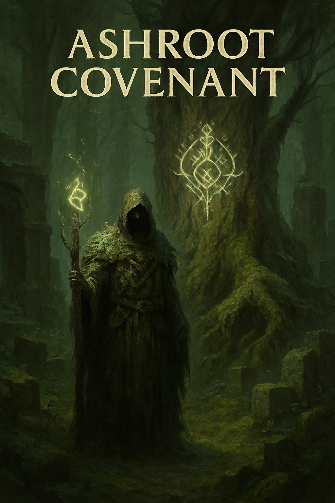

Ashroot Covenant
Break the runes. Bind the wild. In a world where magic was once a sacred pact between soil and soul, the covenants have begun to unravel. Ashroot Covenant is a tactical RPG set in a decaying forest steeped in forgotten lore, where every spell is a story—and every story has a cost.
- Rune-Rewriting Combat: Carve and reshape ancient glyphs mid-battle to alter spells, summon forest spirits, or corrupt the land itself.
- Covenant System: Align with primal forces—Ash, Root, Ember, Hollow—or betray them for forbidden power. Your choices reshape the world and its inhabitants.
- Hand-Painted World: Explore mossbound ruins, glowing trees, and mist-drenched groves rendered in painterly detail.
- Narrative Depth: Uncover lost rituals, decipher cryptic oaths, and decide which myths deserve to be remembered.
- Ambient Soundscape: A haunting score of ritual chants, whispering winds, and the hum of living glyphs draws you deeper into the forest’s secrets.
Join the Covenant
You are a Runebreaker—one who defies tradition to forge new magic. But the forest remembers. And it does not forgive.